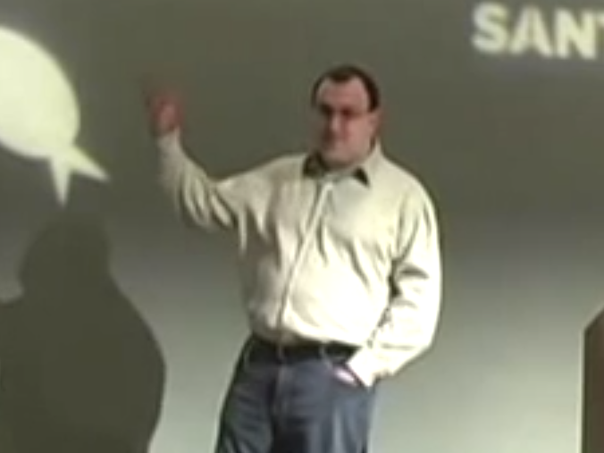

Good Afternoon
How To Give
A Good
Technical Talk
subtitle
“A Good Technical Talk”
Content First
No Pressure
But...
Step 1:
Introduce Yourself
Credential Yourself
(Demonstration)
Why Should You Listen
To A Word That I Say
About This Topic?
I’ve Given A Lot Of Talks

(Mostly at PyCon:
http://www.pyvideo.org/
)
I’m Also
Very Lazy
<
insert infographic
dramatically demonstrating
laziness here
>
You’re Busy
I’m Busy
Step 2:
Don’t Do This
A Time-Trusted Technique
For Being Boring
Put lots of bullets
on your slides
be sure they summarize
every point you’re going to make
turn away from the audience
and read them word for word
You can tell
you’re doing it right
when you have to resort to multiple columns
and even then
not all the bullets quite fit
so you have to start shrinking the font size on some of them
because it’s really important to get all those words onto a slide because otherwise where are you going to read all of them from?
Step 2a
Don’t Do This Either
baby
kitten
Slides Are…
Looks At